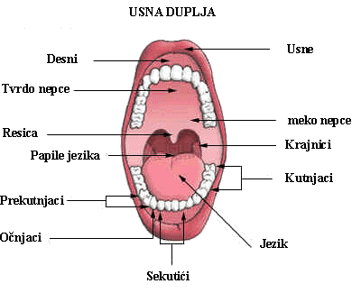
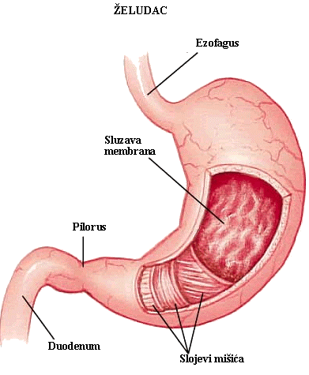
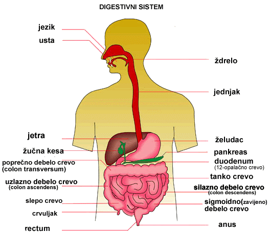

Svaka ćelija našeg tijela predstavlja jednu malu laboratoriju, za čije funkcionisanje je neophodno stalno dopremanje hranljivih materija. Hrana koju unosimo u organizam izgrađena je od krupnih molekula, a oni se ne mogu transportovati do ćelija.
U organima za varenje hrana se razlaže mehaničkim i hemijskim procesima. Kada je hrana potpuno razložena, počinje upijanje-apsorbcija hranljivih materija; do svake ćelije transportovaće ih krv. Nesvareni djelovi hrane izbacuju se iz organizma.
Sistem organa za varenje čini niz šupljih organa: usna duplja, ždrijelo, jednjak, želudac, crijevo. Ti organi povezani su i čine dugačak kanal.
Varenje počinje u ustima
Početni dio sistema organa za varenje je usna duplja, ograničena usnama i obrazima. U ustima se nalaze zubi, jezik i pljuvačne žlijezde. Usna duplja je od nosne odvojena nepcem.
Zubi su usađeni u gornju i donju vilicu. Prvi zubi, koji niču od šestog mjeseca života, zovu se mliječni zubi i ima ih 20. Od šeste godine mliječni zubi počinju da se zamjenjuju stalnim. Odrastao čovjek ima 32 stalna zuba, koji se razlikuju po obliku, veličini i funkciji. Izgled zuba zavisi od funkcije. Sjekutići imaju iskošene ivice poput dlijeta: njima se hrana otkida. Očnjaci su oštri, služe za kidanje hrane. Kutnjaci su najsnažniji i najveći zubi, kojima žvaćemo hranu. Zubi započinju mehaničko varenje hrane: oni je usitnjavaju, što omogućava bolje natapanje pljuvačkom.

Bez obzira na razlike u izgledu, svaki zub ima sličnu građu. Sastoji se od krunice, vidljivog dijela zuba, korijena, kojim je zub usađen u viličnu kost i vrata, koji povezuje krunicu i korijen.
Kada hranu unesemo u usta, luči se pljuvačka; nekad je dovoljno da vidimo lijep kolač ili osjetimo miris omiljenog jela i pljuvačne žlijezde počinju sa radom. Pljuvačku luče tri para krupnih pljuvačnih žlijezda: doušne, podvilične i podjezične i veliki broj sitnih žlijezda u sluzokoži usne duplje. Hranu natopljenu pljuvačkom lakše žvaćemo i gutamo. U ustima započinje i hemijsko varenje-dejstvo enzima. Pljuvačka sadrži enzim amilazu(ptijalin), koji razgrađuje skrob.
Jezik je veoma pokretni mišićni organ koji pomjera hranu u ustima i omogućava bolje natapanje pljuvačkom. Na njemu se nalaze čulne ćelije, koje nas informišu o ukusu hrane. Jezik potiskuje hranu u ždrijelo, u kome se ukrštaju putevi hrane i vazduha. Prilikom gutanja meko nepce sprečava da hrana uđe u nosnu duplju, dok grkljanski poklopac sprečava ulazak hrane u dušnik. Preko grkljanskog poklopca zalogaj lako sklizne u jednjak. Jednjak je mišićna cijev. Talasasti pokreti mišića, koji se naziva peristaltika, guraju hranu niz jednjak prema želucu.
U želucu počinje varenje bjelančevina
Sva hrana koju pojedemo dolazi u želudac. To je kesasti mišić u obliku slova J. Na želudac se nastavlja tanko crijevo. Granicu predstavlja kružni mišić-zatvarač. Ovaj mišić kontroliše izlazak hrane iz želuca. Zidovi želuca su rastgljivi; nakon obilnog obroka želudac se širi. Kontrakcijama mišića zida želuca hrana se usitnjava i miješa sa želudačnim sokom. Njega izlučuju žlijezde sluzokože koja oblaže želudac.
Želudačni sok sadrži nekoliko enzima. Jedan od njih je pepsin, koji započinje varenje bjelančevina. Važan sastojak želudačnog soka je i hlorovodonična kiselina, koja mu daje kiseo karakter neophodan za aktivnost pepsina. Hlorovodonična kiselina učestvuje u razgradnji hrane, a istovremeno ubija bakterije, koje sa hranom unosimo u organizam. Posebne žlijezde u sluzokoži želuca luče mucin-sluz koja štiti sluzokožu želuca od dejstva hlorovodonične kiseline. Kada se varenje u želucu završi, hrana se peristaltičkim pokretima potiskuje u tanko crijevo.
Varenje se završava u tankom crijevu
Tanko crijevo je najduži dio crijeva. Oko četiri puta je duže od čitavog tijela, pa je u trbušnoj duplji više puta izuvijano i ispunjava njen najveći dio.
Početni dio tankog crijeva je dvanaestopalačno crijevo. U njemu se hrana koja je došla iz želuca miješa sa sokovima za varenje, koji se u dvanaestopalačno crijevo ulivaju iz jetre i gušterače. Jetra luči žuč, gustu žutozelenu tečnost, koja razbija masti u sitne kapljice. Tako se olakšava djelovanje enzima pankreasnog soka. Bikarbonatni joni, u pankreasnom soku, neutrališu hlorovodoničnu kiselinu, stvarajući baznu sredinu neophodnu za djelovanje enzima. Ovi joni imaju važnu ulogu u zaštiti sluzokože crijeva.
Pokretima mišića dvanaestopalačnog crijeva hrana prelazi u ostali dio tankog crijeva. Mnogobrojne žlijezde u sluzokoži tankog crijeva izlučuju crijevni sok, koji završava varenje hrane. Crijevni sok sadrži enzime koji bjelančevine razlažu do aminokiselina, šećere do glukoze, a masti na glicerin i masne kiseline.
Apsorbcija hrane i otklanjanje nesvarenih sastojaka
Sluzokoža tankog crijeva veoma je naborana. Osim nabora, na sluzokoži postoje i prstoliki izraštaji-crijevne resice, bogate krvnim i limfnim sudovima. Na ovaj način povećana je površina za apsorbciju hranljivih materija.
Unutrašnjost tankog crijeva ispunjena je kašastom masom, koja se sastoji od hranljivih materija, vode, minerala, vitamina i nesvarenih djelova hrane. Prisustvo hrane izaziva grčenje i širenje crijeva što ubrzava apsorbciju. Crijevne resice apsorbuju hranljive materije, koje prolaze kroz jednoslojni epitel i prelaze u limfu i krv. Krv odnosi hranljive materije u jetru, a odatle u sve djelove našeg tijela.

Preostali sadržaj iz tankog crijeva potiskuje se u debelo crijevo, koje je kraće od tankog. Zalizak na ušću tankog crijeva u debelo crijevo ne dozvoljava vraćanje sadržaja nazad u tanko crijevo. Početni dio debelog crijeva naziva se slijepo crijevo; na kraju se nalazi crvuljak. Pretpostavlja se da slijepo crijevo ima ulogu u "odgajanju" bakterija koje izazivaju truljenje nesvarenih materija. U debelom crijevu se odlažu nesvareni produkti iz kojih se vrši apsorbcija vode i mineralnih soli, neophodnih našem organizmu. Nesvarene materije, bakterije, ćelije sljuštene sa zida crijeva i druge otpadne materije grade fekalnu masu, koja se kroz završno crijevo i čmar izbacuje iz organizma.